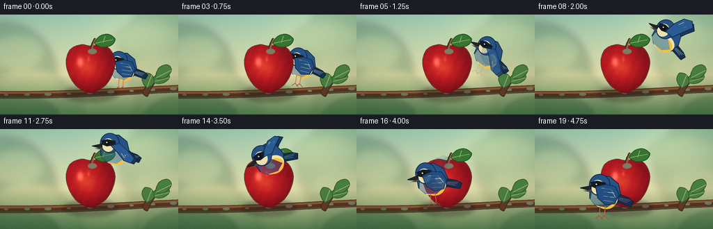
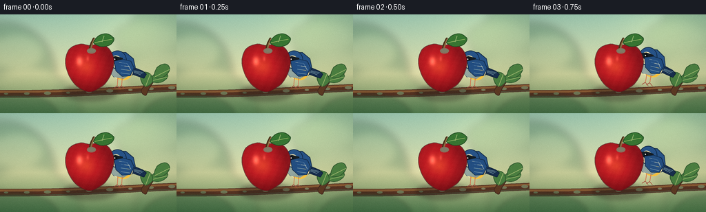
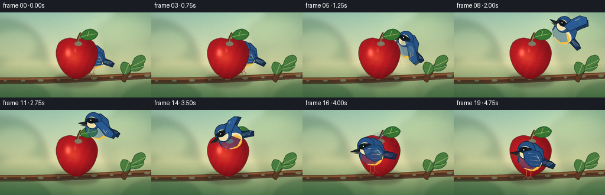
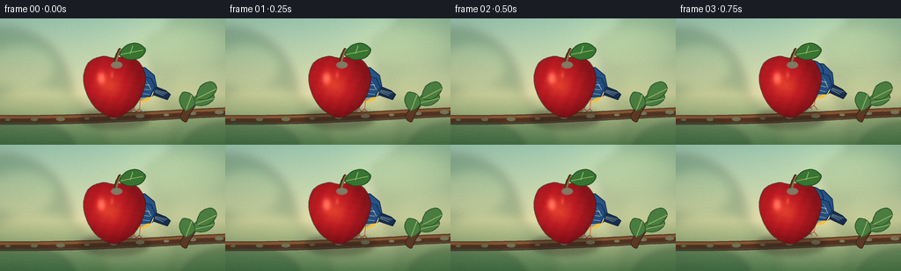
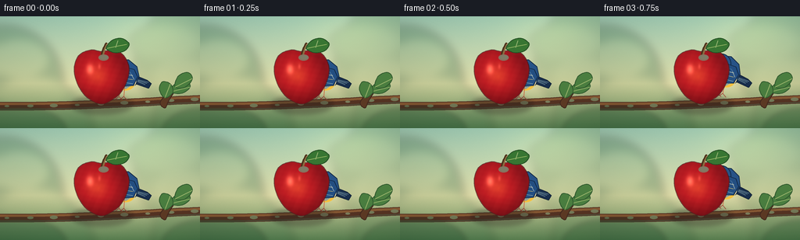

CODING AGENTS AS PIXEL WORLD MODELS
traex/DeepSeek-V4.1-Flash · dynamic_spatial_relationship_0038
点击播放 · 原生 RGB 像素
逐轮保存的候选
回放视频、检查图与代码变化。
每份候选均可单独播放。实际图片检查记录在下方工具轨迹中。
候选 01播放与检查图
点击播放 · 原生 RGB 像素


展开代码变化
--- 上一保存版本
+++ 本次保存版本
@@ -0,0 +1,492 @@
+from pathlib import Path
+import math
+
+import numpy as np
+from PIL import Image, ImageDraw, ImageFilter
+
+import artifact_io
+
+
+W, H = 256, 144
+FRAMES = 20
+FPS = 4.0
+SS = 4
+LW, LH = W * SS, H * SS
+CASE_DIR = Path(__file__).resolve().parent
+
+
+def mix(a, b, t):
+ return tuple(int(round(a[i] + (b[i] - a[i]) * t)) for i in range(3))
+
+
+def smoothstep(edge0, edge1, value):
+ t = np.clip((value - edge0) / (edge1 - edge0), 0.0, 1.0)
+ return t * t * (3.0 - 2.0 * t)
+
+
+def closed_catmull_rom(points, samples=14):
+ result = []
+ count = len(points)
+ for i in range(count):
+ p0 = np.asarray(points[(i - 1) % count], dtype=float)
+ p1 = np.asarray(points[i], dtype=float)
+ p2 = np.asarray(points[(i + 1) % count], dtype=float)
+ p3 = np.asarray(points[(i + 2) % count], dtype=float)
+ for j in range(samples):
+ t = j / samples
+ t2 = t * t
+ t3 = t2 * t
+ point = 0.5 * (
+ 2.0 * p1
+ + (-p0 + p2) * t
+ + (2.0 * p0 - 5.0 * p1 + 4.0 * p2 - p3) * t2
+ + (-p0 + 3.0 * p1 - 3.0 * p2 + p3) * t3
+ )
+ result.append(tuple(point))
+ return result
+
+
+def scale_points(points, scale):
+ return [(round(x * scale), round(y * scale)) for x, y in points]
+
+
+def draw_polygon(draw, points, fill, outline=None, width=1):
+ scaled = scale_points(points, SS)
+ draw.polygon(scaled, fill=fill)
+ if outline is not None:
+ draw.line(scaled + [scaled[0]], fill=outline, width=width, joint="curve")
+
+
+def draw_ellipse(draw, box, fill, outline=None, width=1):
+ scaled = tuple(round(v * SS) for v in box)
+ draw.ellipse(scaled, fill=fill, outline=outline, width=width)
+
+
+def make_background():
+ y, x = np.mgrid[0:LH, 0:LW].astype(np.float32)
+ y /= LH - 1
+ x /= LW - 1
+
+ top = np.array([161, 205, 181], dtype=np.float32)
+ middle = np.array([225, 222, 170], dtype=np.float32)
+ bottom = np.array([91, 130, 82], dtype=np.float32)
+ upper = np.clip(y / 0.60, 0.0, 1.0)
+ lower = np.clip((y - 0.60) / 0.40, 0.0, 1.0)
+ rgb = top[None, None, :] * (1.0 - upper[..., None])
+ rgb += middle[None, None, :] * upper[..., None] * (1.0 - lower[..., None])
+ rgb += bottom[None, None, :] * lower[..., None]
+
+ # Warm sunlight from the upper right and a restrained center vignette.
+ sun = np.exp(-(((x - 0.78) / 0.34) ** 2 + ((y - 0.12) / 0.31) ** 2) * 2.0)
+ rgb += sun[..., None] * np.array([28.0, 20.0, 6.0], dtype=np.float32)
+ vignette = 1.0 - 0.12 * (((x - 0.5) / 0.68) ** 2 + ((y - 0.5) / 0.82) ** 2)
+ rgb *= np.clip(vignette, 0.82, 1.0)[..., None]
+
+ rng = np.random.default_rng(38)
+ texture = rng.normal(0.0, 1.2, (LH, LW, 1)).astype(np.float32)
+ rgb = np.clip(rgb + texture, 0, 255).astype(np.uint8)
+ image = Image.fromarray(rgb, "RGB").convert("RGBA")
+
+ distant = Image.new("RGBA", (LW, LH), (0, 0, 0, 0))
+ dd = ImageDraw.Draw(distant)
+ distant_shapes = [
+ ((-70, 12, 82, 170), (52, 99, 67, 78)),
+ ((172, -18, 332, 130), (79, 122, 76, 56)),
+ ((-20, 82, 120, 220), (42, 92, 58, 50)),
+ ((196, 70, 318, 205), (60, 108, 65, 42)),
+ ]
+ for box, color in distant_shapes:
+ draw_ellipse(dd, box, color)
+ for cx, cy, rx, ry in [
+ (25, 55, 36, 24),
+ (210, 33, 45, 22),
+ (232, 77, 35, 23),
+ (42, 100, 43, 21),
+ ]:
+ draw_ellipse(dd, (cx - rx, cy - ry, cx + rx, cy + ry), (93, 139, 83, 42))
+ distant = distant.filter(ImageFilter.GaussianBlur(5.5 * SS))
+ image.alpha_composite(distant)
+
+ branch = Image.new("RGBA", (LW, LH), (0, 0, 0, 0))
+ bd = ImageDraw.Draw(branch)
+ branch_points = []
+ for i in range(81):
+ t = i / 80.0
+ bx = -14.0 + t * 286.0
+ by = 115.0 - 7.0 * t + 2.0 * math.sin(t * math.pi * 1.3 + 0.3)
+ branch_points.append((bx, by))
+ scaled_branch = scale_points(branch_points, SS)
+ bd.line(scaled_branch, fill=(83, 50, 34, 255), width=11 * SS, joint="curve")
+ bd.line(
+ [(x, y - 3 * SS) for x, y in scaled_branch],
+ fill=(132, 87, 50, 255),
+ width=3 * SS,
+ joint="curve",
+ )
+ bd.line(
+ [(x, y + 4 * SS) for x, y in scaled_branch],
+ fill=(55, 35, 27, 180),
+ width=2 * SS,
+ joint="curve",
+ )
+ for i in range(9):
+ t = 0.08 + i * 0.105
+ bx = -14.0 + t * 286.0
+ by = 115.0 - 7.0 * t + 2.0 * math.sin(t * math.pi * 1.3 + 0.3)
+ r = (3.0 + (i % 3)) * SS
+ bd.ellipse((bx * SS - r, by * SS - r * 0.45, bx * SS + r, by * SS + r * 0.45), fill=(52, 32, 25, 90))
+ image.alpha_composite(branch)
+
+ twig = Image.new("RGBA", (LW, LH), (0, 0, 0, 0))
+ td = ImageDraw.Draw(twig)
+ twig_path = closed_catmull_rom(
+ [(205, 111), (214, 99), (224, 91), (232, 88), (224, 96), (216, 108), (211, 118)],
+ samples=10,
+ )
+ draw_polygon(td, twig_path, (91, 57, 35, 255), (65, 39, 29, 255), max(1, SS))
+ leaves = [
+ [(218, 97), (226, 85), (239, 83), (243, 91), (233, 99)],
+ [(224, 91), (228, 77), (240, 72), (246, 80), (237, 91)],
+ [(211, 105), (204, 94), (208, 84), (218, 87), (221, 98)],
+ ]
+ for leaf in leaves:
+ smooth_leaf = closed_catmull_rom(leaf, samples=10)
+ draw_polygon(td, smooth_leaf, (69, 122, 60, 245), (47, 87, 45, 255), max(1, SS))
+ td.line(
+ [(round(leaf[0][0] * SS), round(leaf[0][1] * SS)), (round(leaf[3][0] * SS), round(leaf[3][1] * SS))],
+ fill=(143, 175, 94, 180),
+ width=max(1, SS),
+ )
+ image.alpha_composite(twig)
+
+ foreground = Image.new("RGBA", (LW, LH), (0, 0, 0, 0))
+ fd = ImageDraw.Draw(foreground)
+ for box, color in [
+ ((-38, 115, 86, 190), (34, 77, 45, 82)),
+ ((205, 118, 310, 195), (38, 83, 45, 74)),
+ ]:
+ draw_ellipse(fd, box, color)
+ foreground = foreground.filter(ImageFilter.GaussianBlur(3.2 * SS))
+ image.alpha_composite(foreground)
+ return image
+
+
+APPLE_OUTLINE = [
+ (130, 45),
+ (145, 43),
+ (158, 50),
+ (165, 66),
+ (162, 84),
+ (153, 100),
+ (141, 109),
+ (130, 113),
+ (118, 109),
+ (107, 100),
+ (98, 84),
+ (95, 66),
+ (101, 50),
+ (116, 43),
+]
+
+
+def make_apple_layer():
+ layer = Image.new("RGBA", (LW, LH), (0, 0, 0, 0))
+
+ shadow = Image.new("RGBA", (LW, LH), (0, 0, 0, 0))
+ sd = ImageDraw.Draw(shadow)
+ draw_ellipse(sd, (91, 102, 170, 126), (40, 35, 27, 95))
+ shadow = shadow.filter(ImageFilter.GaussianBlur(3.0 * SS))
+ layer.alpha_composite(shadow)
+
+ mask_image = Image.new("L", (LW, LH), 0)
+ md = ImageDraw.Draw(mask_image)
+ smooth_outline = closed_catmull_rom(APPLE_OUTLINE, samples=16)
+ md.polygon(scale_points(smooth_outline, SS), fill=255)
+ mask = np.asarray(mask_image, dtype=np.float32) / 255.0
+
+ x0, y0, x1, y1 = 92 * SS, 40 * SS, 169 * SS, 116 * SS
+ yy, xx = np.mgrid[y0:y1, x0:x1].astype(np.float32)
+ nx = (xx / SS - 130.0) / 35.5
+ ny = (yy / SS - 79.0) / 35.0
+ radial = np.sqrt((nx + 0.12) ** 2 + (ny + 0.06) ** 2)
+
+ light = 0.30 + 0.58 * np.clip(1.0 - radial, 0.0, 1.0)
+ light += 0.18 * np.clip(-0.60 * nx - 0.62 * ny, 0.0, 1.0)
+ light = np.clip(light, 0.0, 1.0)
+
+ dark = np.array([86.0, 11.0, 20.0], dtype=np.float32)
+ mid = np.array([190.0, 29.0, 35.0], dtype=np.float32)
+ bright = np.array([241.0, 78.0, 49.0], dtype=np.float32)
+ lower = np.clip(light / 0.62, 0.0, 1.0)[..., None]
+ upper = np.clip((light - 0.62) / 0.38, 0.0, 1.0)[..., None]
+ rgb = dark * (1.0 - lower) + mid * lower
+ rgb = rgb * (1.0 - upper) + bright * upper
+
+ spec = np.exp(-(((nx + 0.42) / 0.12) ** 2 + ((ny + 0.31) / 0.18) ** 2))
+ spec2 = np.exp(-(((nx + 0.08) / 0.05) ** 2 + ((ny + 0.42) / 0.10) ** 2))
+ rgb += spec[..., None] * np.array([93.0, 77.0, 58.0], dtype=np.float32)
+ rgb += spec2[..., None] * np.array([34.0, 27.0, 22.0], dtype=np.float32)
+
+ texture = (
+ np.sin(17.0 * nx + 7.0 * ny + 0.6)
+ + 0.55 * np.sin(31.0 * ny - 5.0 * nx)
+ + 0.35 * np.sin(41.0 * nx + 19.0 * ny)
+ )
+ rgb += texture[..., None] * np.array([2.0, 1.1, 0.8], dtype=np.float32)
+ rgb -= np.clip(ny - 0.25, 0.0, 1.0)[..., None] * np.array([22.0, 7.0, 8.0], dtype=np.float32)
+ rgb = np.clip(rgb, 0, 255).astype(np.uint8)
+
+ patch = np.zeros((y1 - y0, x1 - x0, 4), dtype=np.uint8)
+ patch[..., :3] = rgb
+ patch[..., 3] = (mask[y0:y1, x0:x1] * 255.0).astype(np.uint8)
+ apple_pixels = Image.fromarray(patch, "RGBA")
+ layer.alpha_composite(apple_pixels, (x0, y0))
+
+ ad = ImageDraw.Draw(layer)
+ outline_scaled = scale_points(smooth_outline, SS)
+ ad.line(
+ outline_scaled + [outline_scaled[0]],
+ fill=(80, 22, 26, 205),
+ width=max(1, int(1.15 * SS)),
+ joint="curve",
+ )
+
+ # Stem.
+ stem_points = [(130, 54), (131, 47), (133, 41), (136, 35)]
+ stem_smooth = closed_catmull_rom(stem_points + [(134, 40)], samples=8)
+ stem_smooth = [(x, y) for x, y in stem_smooth if y <= 55]
+ if len(stem_smooth) >= 2:
+ stem_scaled = scale_points(stem_smooth, SS)
+ ad.line(stem_scaled, fill=(74, 49, 27, 255), width=3 * SS, joint="curve")
+ ad.line(
+ [(x + SS, y) for x, y in stem_scaled],
+ fill=(137, 91, 47, 210),
+ width=SS,
+ joint="curve",
+ )
+
+ # Leaf, with a pale central vein.
+ leaf_points = [(136, 40), (143, 31), (155, 28), (165, 35), (160, 44), (148, 47), (139, 44)]
+ leaf = closed_catmull_rom(leaf_points, samples=12)
+ draw_polygon(ad, leaf, (55, 117, 50, 255), (35, 76, 35, 255), max(1, int(1.2 * SS)))
+ ad.line(
+ [(137 * SS, 41 * SS), (151 * SS, 38 * SS), (162 * SS, 36 * SS)],
+ fill=(151, 180, 92, 220),
+ width=max(1, SS),
+ joint="curve",
+ )
+ ad.line(
+ [(148 * SS, 40 * SS), (151 * SS, 31 * SS)],
+ fill=(125, 161, 82, 175),
+ width=max(1, SS),
+ )
+
+ # A tiny dimple makes the fruit read as an apple rather than a red sphere.
+ draw_ellipse(ad, (126, 49, 139, 57), (76, 21, 23, 135))
+ draw_ellipse(ad, (128, 50, 138, 55), (42, 20, 20, 120))
+ return layer
+
+
+def bird_layer(flap, foldedness, angle):
+ layer = Image.new("RGBA", (140 * SS, 120 * SS), (0, 0, 0, 0))
+ d = ImageDraw.Draw(layer)
+ cx, cy = 70.0, 60.0
+
+ navy = (24, 46, 76, 255)
+ blue = (39, 83, 135, 255)
+ blue_light = (82, 126, 174, 255)
+ cream = (239, 224, 173, 255)
+ yellow = (244, 191, 64, 255)
+ black = (21, 29, 35, 255)
+
+ # Tail.
+ tail = [(80, 58), (102, 67), (108, 72), (104, 79), (84, 72)]
+ draw_polygon(d, tail, navy, (15, 31, 53, 255), max(1, int(1.1 * SS)))
+ for offset in (0, 3, 6):
+ d.line(
+ [(83 * SS, (65 + offset * 0.35) * SS), ((104 - offset * 0.8) * SS, (70 + offset * 0.55) * SS)],
+ fill=(70, 111, 153, 185),
+ width=max(1, SS),
+ )
+
+ flight_alpha = int(round(255 * (1.0 - foldedness)))
+ folded_alpha = int(round(255 * foldedness))
+
+ # Far wing, slightly darker than the near wing.
+ far_up = [(65, 52), (70, 36), (79, 23), (91, 19), (97, 28), (87, 40), (77, 55)]
+ far_down = [(64, 53), (73, 64), (82, 80), (93, 85), (98, 77), (89, 63), (77, 50)]
+ far_points = [
+ (x + 4, y + 2)
+ for x, y in [
+ (mix_pt(a, b, (flap + 1.0) * 0.5))
+ for a, b in zip(far_up, far_down)
+ ]
+ ]
+ if flight_alpha > 0:
+ wing = Image.new("RGBA", layer.size, (0, 0, 0, 0))
+ wd = ImageDraw.Draw(wing)
+ draw_polygon(wd, far_points, (27, 56, 91, flight_alpha), (16, 35, 58, flight_alpha), max(1, SS))
+ layer.alpha_composite(wing)
+
+ # Body and belly.
+ body = [(48, 58), (51, 44), (61, 37), (75, 37), (87, 47), (90, 61), (85, 74), (72, 81), (56, 77), (48, 67)]
+ draw_polygon(d, body, blue, (18, 39, 64, 255), max(1, int(1.15 * SS)))
+ draw_ellipse(d, (52, 56, 86, 81), cream)
+ draw_ellipse(d, (57, 61, 84, 82), yellow)
+ draw_polygon(d, [(51, 60), (60, 55), (70, 58), (82, 73), (71, 80), (56, 77), (49, 69)], (52, 99, 151, 110))
+
+ # Head and face.
+ draw_ellipse(d, (47, 34, 76, 64), blue, (16, 37, 62, 255), max(1, int(1.15 * SS)))
+ draw_ellipse(d, (50, 42, 68, 62), cream)
+ draw_polygon(d, [(49, 45), (58, 43), (70, 46), (70, 52), (57, 54), (50, 51)], black)
+ draw_ellipse(d, (55, 46, 61, 52), (11, 17, 21, 255))
+ draw_ellipse(d, (56, 47, 58, 49), (245, 250, 235, 255))
+ draw_polygon(d, [(50, 50), (35, 53), (50, 57)], (33, 39, 42, 255), (17, 22, 25, 255), max(1, SS))
+ draw_polygon(d, [(50, 55), (39, 57), (50, 59)], (70, 73, 67, 255))
+
+ # Near wing.
+ near_up = [(63, 52), (69, 35), (79, 21), (91, 18), (97, 27), (87, 40), (76, 55)]
+ near_down = [(63, 53), (72, 65), (82, 81), (93, 86), (98, 77), (88, 63), (76, 49)]
+ near_points = [mix_pt(a, b, (flap + 1.0) * 0.5) for a, b in zip(near_up, near_down)]
+ if flight_alpha > 0:
+ wing = Image.new("RGBA", layer.size, (0, 0, 0, 0))
+ wd = ImageDraw.Draw(wing)
+ draw_polygon(wd, near_points, (42, 91, 146, flight_alpha), (19, 42, 69, flight_alpha), max(1, int(1.1 * SS)))
+ for frac in (0.25, 0.45, 0.65):
+ p0 = mix_pt(near_points[1], near_points[4], frac)
+ p1 = mix_pt(near_points[2], near_points[5], frac)
+ wd.line(
+ [(round(p0[0] * SS), round(p0[1] * SS)), (round(p1[0] * SS), round(p1[1] * SS))],
+ fill=(112, 156, 194, int(flight_alpha * 0.62)),
+ width=max(1, SS),
+ )
+ layer.alpha_composite(wing)
+
+ folded_wing = [(56, 51), (70, 48), (83, 51), (88, 62), (82, 75), (69, 76), (59, 67)]
+ if folded_alpha > 0:
+ wing = Image.new("RGBA", layer.size, (0, 0, 0, 0))
+ wd = ImageDraw.Draw(wing)
+ draw_polygon(wd, folded_wing, (35, 78, 129, folded_alpha), (18, 40, 66, folded_alpha), max(1, int(1.05 * SS)))
+ wd.line(
+ [(64 * SS, 53 * SS), (77 * SS, 55 * SS), (83 * SS, 66 * SS)],
+ fill=(91, 132, 169, int(folded_alpha * 0.65)),
+ width=max(1, SS),
+ )
+ for yy in (58, 64, 70):
+ wd.line(
+ [(67 * SS, yy * SS), (81 * SS, (yy + 2) * SS)],
+ fill=(108, 151, 188, int(folded_alpha * 0.42)),
+ width=max(1, SS),
+ )
+ layer.alpha_composite(wing)
+
+ # Tucked or landing feet.
+ if foldedness > 0.15:
+ foot_alpha = int(round(255 * foldedness))
+ for dx in (-2, 5):
+ d.line(
+ [(round((64 + dx) * SS), 78 * SS), (round((63 + dx) * SS), 91 * SS)],
+ fill=(197, 104, 70, foot_alpha),
+ width=max(1, SS),
+ )
+ d.line(
+ [(round((63 + dx) * SS), 91 * SS), (round((58 + dx) * SS), 95 * SS)],
+ fill=(155, 74, 58, foot_alpha),
+ width=max(1, SS),
+ )
+ d.line(
+ [(round((63 + dx) * SS), 91 * SS), (round((68 + dx) * SS), 96 * SS)],
+ fill=(155, 74, 58, foot_alpha),
+ width=max(1, SS),
+ )
+
+ layer = layer.resize((round(140 * SS), round(120 * SS)), Image.Resampling.LANCZOS)
+ if abs(angle) > 0.1:
+ layer = layer.rotate(angle, resample=Image.Resampling.BICUBIC, expand=True)
+ return layer
+
+
+def mix_pt(a, b, t):
+ return (a[0] + (b[0] - a[0]) * t, a[1] + (b[1] - a[1]) * t)
+
+
+KEYS = [
+ (0.00, 178.0, 76.0, 0.90, 0.0),
+ (0.12, 178.0, 76.0, 0.90, 0.0),
+ (0.18, 179.0, 70.0, 0.91, -8.0),
+ (0.25, 190.0, 58.0, 0.92, -22.0),
+ (0.35, 198.0, 42.0, 0.94, -38.0),
+ (0.45, 188.0, 32.0, 0.95, -26.0),
+ (0.55, 170.0, 30.0, 0.96, -4.0),
+ (0.65, 150.0, 33.0, 0.98, 20.0),
+ (0.73, 133.0, 43.0, 1.00, 30.0),
+ (0.80, 118.0, 59.0, 1.02, 22.0),
+ (0.86, 108.0, 77.0, 1.04, 8.0),
+ (0.91, 102.0, 92.0, 1.05, 0.0),
+ (1.00, 102.0, 92.0, 1.05, 0.0),
+]
+
+
+def bird_state(t):
+ if t <= KEYS[0][0]:
+ return KEYS[0][1:]
+ if t >= KEYS[-1][0]:
+ return KEYS[-1][1:]
+ for i in range(len(KEYS) - 1):
+ a = KEYS[i]
+ b = KEYS[i + 1]
+ if a[0] <= t <= b[0]:
+ u = (t - a[0]) / (b[0] - a[0])
+ u = u * u * (3.0 - 2.0 * u)
+ return tuple(a[j] + (b[j] - a[j]) * u for j in range(1, 5))
+ return KEYS[-1][1:]
+
+
+def place_bird(frame, state):
+ x, y, scale, angle = state
+ u = np.clip((state_t - 0.15) / 0.72, 0.0, 1.0)
+ folded = max(1.0 - float(smoothstep(0.00, 0.22, u)), float(smoothstep(0.82, 1.00, u)))
+ folded = min(1.0, max(0.0, folded))
+ flap = math.sin(u * math.pi * 4.0 - 0.25)
+ layer = bird_layer(flap, folded, angle)
+ layer = layer.resize(
+ (max(1, round(layer.width * scale)), max(1, round(layer.height * scale))),
+ Image.Resampling.LANCZOS,
+ )
+ px = round(x * SS - layer.width / 2)
+ py = round(y * SS - layer.height / 2)
+ frame.alpha_composite(layer, (px, py))
+
+
+def render_frames():
+ background = make_background()
+ apple = make_apple_layer()
+ frames = []
+ rng = np.random.default_rng(38)
+
+ for index in range(FRAMES):
+ t = index / (FRAMES - 1)
+ state = bird_state(t)
+ frame = background.copy()
+
+ global state_t
+ state_t = t
+ if t < 0.28:
+ place_bird(frame, state)
+ frame.alpha_composite(apple)
+ else:
+ frame.alpha_composite(apple)
+ place_bird(frame, state)
+
+ small = frame.convert("RGB").resize((W, H), Image.Resampling.LANCZOS)
+ pixels = np.asarray(small, dtype=np.float32)
+ noise = rng.normal(0.0, 1.0, (H, W, 1)).astype(np.float32)
+ pixels = np.clip(pixels + noise, 0, 255).astype(np.uint8)
+ frames.append(pixels)
+ return np.stack(frames)
+
+
+if __name__ == "__main__":
+ rendered = render_frames()
+ artifact_io.save(rendered, CASE_DIR)
+ print(f"wrote {rendered.shape} RGB frames to {CASE_DIR}")
候选 02播放与检查图
点击播放 · 原生 RGB 像素


展开代码变化
--- 上一保存版本
+++ 本次保存版本
@@ -85,7 +85,7 @@
rng = np.random.default_rng(38)
texture = rng.normal(0.0, 1.2, (LH, LW, 1)).astype(np.float32)
rgb = np.clip(rgb + texture, 0, 255).astype(np.uint8)
- image = Image.fromarray(rgb, "RGB").convert("RGBA")
+ image = Image.fromarray(rgb).convert("RGBA")
distant = Image.new("RGBA", (LW, LH), (0, 0, 0, 0))
dd = ImageDraw.Draw(distant)
@@ -239,7 +239,7 @@
patch = np.zeros((y1 - y0, x1 - x0, 4), dtype=np.uint8)
patch[..., :3] = rgb
patch[..., 3] = (mask[y0:y1, x0:x1] * 255.0).astype(np.uint8)
- apple_pixels = Image.fromarray(patch, "RGBA")
+ apple_pixels = Image.fromarray(patch)
layer.alpha_composite(apple_pixels, (x0, y0))
ad = ImageDraw.Draw(layer)
@@ -411,19 +411,19 @@
KEYS = [
- (0.00, 178.0, 76.0, 0.90, 0.0),
- (0.12, 178.0, 76.0, 0.90, 0.0),
- (0.18, 179.0, 70.0, 0.91, -8.0),
- (0.25, 190.0, 58.0, 0.92, -22.0),
- (0.35, 198.0, 42.0, 0.94, -38.0),
- (0.45, 188.0, 32.0, 0.95, -26.0),
- (0.55, 170.0, 30.0, 0.96, -4.0),
- (0.65, 150.0, 33.0, 0.98, 20.0),
- (0.73, 133.0, 43.0, 1.00, 30.0),
- (0.80, 118.0, 59.0, 1.02, 22.0),
- (0.86, 108.0, 77.0, 1.04, 8.0),
- (0.91, 102.0, 92.0, 1.05, 0.0),
- (1.00, 102.0, 92.0, 1.05, 0.0),
+ (0.00, 160.0, 76.0, 0.88, 0.0),
+ (0.12, 160.0, 76.0, 0.88, 0.0),
+ (0.18, 162.0, 70.0, 0.90, -8.0),
+ (0.25, 177.0, 58.0, 0.92, -22.0),
+ (0.35, 192.0, 42.0, 0.94, -38.0),
+ (0.45, 188.0, 31.0, 0.95, -26.0),
+ (0.55, 170.0, 28.0, 0.96, -4.0),
+ (0.65, 151.0, 32.0, 0.98, 20.0),
+ (0.73, 135.0, 44.0, 1.00, 30.0),
+ (0.80, 120.0, 60.0, 1.02, 22.0),
+ (0.86, 118.0, 74.0, 1.04, 8.0),
+ (0.91, 132.0, 80.0, 1.05, 0.0),
+ (1.00, 132.0, 80.0, 1.05, 0.0),
]
@@ -442,9 +442,9 @@
return KEYS[-1][1:]
-def place_bird(frame, state):
+def place_bird(frame, state, t):
x, y, scale, angle = state
- u = np.clip((state_t - 0.15) / 0.72, 0.0, 1.0)
+ u = np.clip((t - 0.15) / 0.72, 0.0, 1.0)
folded = max(1.0 - float(smoothstep(0.00, 0.22, u)), float(smoothstep(0.82, 1.00, u)))
folded = min(1.0, max(0.0, folded))
flap = math.sin(u * math.pi * 4.0 - 0.25)
@@ -469,14 +469,12 @@
state = bird_state(t)
frame = background.copy()
- global state_t
- state_t = t
if t < 0.28:
- place_bird(frame, state)
+ place_bird(frame, state, t)
frame.alpha_composite(apple)
else:
frame.alpha_composite(apple)
- place_bird(frame, state)
+ place_bird(frame, state, t)
small = frame.convert("RGB").resize((W, H), Image.Resampling.LANCZOS)
pixels = np.asarray(small, dtype=np.float32)
候选 03播放与检查图
点击播放 · 原生 RGB 像素

展开代码变化
--- 上一保存版本
+++ 本次保存版本
@@ -462,7 +462,6 @@
background = make_background()
apple = make_apple_layer()
frames = []
- rng = np.random.default_rng(38)
for index in range(FRAMES):
t = index / (FRAMES - 1)
@@ -477,10 +476,7 @@
place_bird(frame, state, t)
small = frame.convert("RGB").resize((W, H), Image.Resampling.LANCZOS)
- pixels = np.asarray(small, dtype=np.float32)
- noise = rng.normal(0.0, 1.0, (H, W, 1)).astype(np.float32)
- pixels = np.clip(pixels + noise, 0, 255).astype(np.uint8)
- frames.append(pixels)
+ frames.append(np.asarray(small, dtype=np.uint8))
return np.stack(frames)
可观测工具轨迹
实际执行的命令与返回图片。
命令 1exit 0
/bin/bash -c "pwd && rg --files -g '"'!*node_modules*'"' -g '"'!*.mp4'"' -g '"'!*.webm'"' | sort | head -200"
命令 2exit 0
/bin/bash -c "printf '%s\\n' '--- prompt.txt ---'; sed -n '1,240p' prompt.txt; printf '%s\\n' '--- GENERATION_RULES.md ---'; sed -n '1,320p' GENERATION_RULES.md; printf '%s\\n' '--- task_spec.json ---'; sed -n '1,320p' task_spec.json"
命令 3exit 0
/bin/bash -c "ls -la; find . -maxdepth 2 -type f -printf '%p %s bytes\\n' | sort | head -200"
命令 4exit 0
/bin/bash -c "sed -n '1,260p' artifact_io.py"
命令 5exit 0
/bin/bash -c "sed -n '1,260p' player_template.html"
命令 6exit 0
/bin/bash -c "python - <<'PY' import sys for m in ['numpy','PIL','imageio','cv2','matplotlib']: try: mod=__import__(m); print(m, getattr(mod,'__version__','ok')) except Exception as e: print(m, 'MISSING', e) PY command -v ffmpeg || true ffmpeg -version 2>/dev/null | head -2 || true"
命令 7exit 1
/bin/bash -c 'MPLCONFIGDIR=.tmp/mpl python generate.py'
命令 8exit 0
/bin/bash -c 'MPLCONFIGDIR=.tmp/mpl python generate.py'
命令 9exit 0
/bin/bash -c "python - <<'PY'
from PIL import Image
im=Image.open('inspection.png')
print(im.size)
im.resize((im.width*2,im.height*2), Image.Resampling.NEAREST).save('.tmp/inspection2x.png')
PY"命令 10exit 0
/bin/bash -c "python - <<'PY'
from PIL import Image
for p in ['frames/00.png','frames/05.png','frames/10.png','frames/15.png','frames/19.png']:
im=Image.open(p)
im.resize((1024,576), Image.Resampling.NEAREST).save('.tmp/'+p.split('/')[-1])
print(p, im.getbbox())
PY"命令 11exit 0
/bin/bash -c "python - <<'PY'
from PIL import Image
paths=['frames/00.png','frames/05.png','frames/10.png','frames/15.png','frames/19.png']
ims=[Image.open(p).resize((768,432),Image.Resampling.NEAREST) for p in paths]
out=Image.new('RGB',(1536,1296),(25,28,35))
for i,im in enumerate(ims): out.paste(im,((i%2)*768,(i//2)*432))
out.save('.tmp/overview.png')
PY"命令 12exit 0
/bin/bash -c "python - <<'PY'
from PIL import Image
im=Image.open('frames/00.png').resize((1024,576),Image.Resampling.NEAREST)
im.save('.tmp/frame00.png')
im=Image.open('frames/19.png').resize((1024,576),Image.Resampling.NEAREST)
im.save('.tmp/frame19.png')
PY"命令 13exit 0
/bin/bash -c 'command -v chafa || true; command -v viu || true; command -v jp2 || true; command -v img2txt || true; command -v ffmpeg || true; command -v ffprobe || true'
命令 14exit 0
/bin/bash -c "python - <<'PY'
from PIL import Image
import numpy as np
chars=' .:-=+*#%@'
for idx in [0,4,8,12,16,19]:
im=np.asarray(Image.open(f'frames/{idx:02d}.png').convert('L').resize((64,36),Image.Resampling.LANCZOS))
print(f'\\nFRAME {idx:02d}')
for row in im:
print(''.join(chars[min(len(chars)-1,int(v)*len(chars)//256)] for v in row))
PY"命令 15exit 0
/bin/bash -c "python - <<'PY'
import generate as g
import numpy as np
from PIL import Image
apple=g.make_apple_layer()
for i in range(g.FRAMES):
t=i/(g.FRAMES-1)
state=g.bird_state(t)
x,y,s,a=state
g.state_t=t
u=np.clip((t-.15)/.72,0,1)
folded=max(1-float(g.smoothstep(0,.22,u)),float(g.smoothstep(.82,1,u)))
folded=min(1,max(0,folded))
flap=np.sin(u*np.pi*4-.25)
layer=g.bird_layer(flap,folded,a)
layer=layer.resize((round(layer.width*s),round(layer.height*s)),Image.Resampling.LANCZOS)
px=round(x*g.SS-layer.width/2); py=round(y*g.SS-layer.height/2)
am=np.asarray(layer.getchannel('A'))
aa=np.asarray(apple.getchannel('A'))
# sample alpha at highres by translating bbox
ys,xs=np.nonzero(am>40)
bx0,bx1=px+xs.min(),px+xs.max(); by0,by1=py+ys.min(),py+ys.max()
# rough bird visible area outside apple (apple at same coordinates)
ax0,ay0=px+xs.min(),py+ys.min(); patch=am[ys.min():ys.max()+1,xs.min():xs.max()+1]
apple_patch=aa[ay0:ay0+patch.shape[0],ax0:ax0+patch.shape[1]]
vis=(patch>40)&(apple_patch<128)
print(i, 't=%.2f'%t, 'center', (round(x),round(y)), 'bbox', (round(bx0/g.SS),round(by0/g.SS),round(bx1/g.SS),round(by1/g.SS)), 'vis',vis.mean().round(2),'fold',round(folded,2),'flap',round(flap,2))
PY"命令 16exit 0
/bin/bash -c "python - <<'PY'
try:
import imageio_ffmpeg
print('imageio_ffmpeg', imageio_ffmpeg.get_ffmpeg_exe())
except Exception as e: print('no imageio_ffmpeg', repr(e))
try:
import av; print('av', av.__version__)
except Exception as e: print('no av', repr(e))
PY"命令 17exit 0
/bin/bash -c "python - <<'PY'
from PIL import Image, ImageDraw
paths=[f'frames/{i:02d}.png' for i in range(20)]
w,h=256,144
out=Image.new('RGB',(w*5,(h+20)*4),(20,24,29)); d=ImageDraw.Draw(out)
for i,p in enumerate(paths):
x=(i%5)*w; y=(i//5)*(h+20)
d.text((x+5,y+4),f'{i:02d} {i/4:.2f}s',fill=(240,240,240))
out.paste(Image.open(p),(x,y+20))
out.resize((out.width*2,out.height*2),Image.Resampling.NEAREST).save('.tmp/allframes.png')
print(out.size)
PY"命令 18exit 0
/bin/bash -c 'MPLCONFIGDIR=.tmp/mpl python generate.py'
命令 19exit 0
/bin/bash -c "python - <<'PY'
from PIL import Image, ImageDraw
paths=[f'frames/{i:02d}.png' for i in range(20)]
w,h=256,144
out=Image.new('RGB',(w*5,(h+20)*4),(20,24,29)); d=ImageDraw.Draw(out)
for i,p in enumerate(paths):
x=(i%5)*w; y=(i//5)*(h+20)
d.text((x+5,y+4),f'{i:02d} {i/4:.2f}s',fill=(240,240,240))
out.paste(Image.open(p),(x,y+20))
out.resize((out.width*2,out.height*2),Image.Resampling.NEAREST).save('.tmp/allframes.png')
# Pixel coverage stats and distinct-frame verification.
import numpy as np
arr=np.stack([np.asarray(Image.open(p).convert('RGB')) for p in paths])
print('shape',arr.shape,'dtype',arr.dtype,'range',arr.min(),arr.max())
for i in [0,1,3,5,8,12,15,17,19]:
print(i, 'mean',arr[i].mean().round(2),'std',arr[i].std().round(2),'diffprev',0 if i==0 else int(np.abs(arr[i].astype(int)-arr[i-1].astype(int)).mean().round(2)))
PY"命令 20exit 0
/bin/bash -c "python - <<'PY'
import json, numpy as np
from pathlib import Path
from PIL import Image
spec=json.loads(Path('task_spec.json').read_text())
z=np.load('pixels.npz')['pixels']
print('npz',z.shape,z.dtype,'expected',(spec['height'],spec['width'],spec['frames']))
files=sorted(Path('frames').glob('*.png'))
print('pngs',len(files),'names',files[0].name,files[-1].name)
print('sizes',sorted(set(Image.open(p).size for p in files)))
print('index.html bytes',Path('index.html').stat().st_size)
print('inspection',Image.open('inspection.png').size,'transition',Image.open('transition_check.png').size)
# Verify every adjacent pair changes.
arr=np.stack([np.asarray(Image.open(p).convert('RGB')) for p in files])
d=[float(np.abs(arr[i].astype(np.int16)-arr[i-1].astype(np.int16)).mean()) for i in range(1,len(arr))]
print('adjacent mean abs diffs', [round(x,2) for x in d])
print('unique consecutive pixels min/median', int(min(np.any(arr[i]"'!=arr[i-1],axis=2).sum() for i in range(1,len(arr)))), int(np.median([np.any(arr[i]!=arr[i-1],axis=2).sum() for i in range(1,len(arr))])))
# Confirm packed tensor decodes exactly to PNG RGB.
unpacked=np.stack([((z[...,0].astype(np.uint32)<<16)|(z[...,1].astype(np.uint32)<<8)|z[...,2])[...,None]])
reconstructed=np.stack([np.stack([(z[...,0]>>16)&255,(z[...,0]>>8)&255,z[...,0]&255],axis=-1)])
print('"'packed/PNG exact',bool(np.array_equal(reconstructed,arr)))
PY"命令 21exit 0
/bin/bash -c "python - <<'PY'
import numpy as np
from pathlib import Path
from PIL import Image
z=np.load('pixels.npz')['pixels']
arr=np.stack([np.asarray(Image.open(p).convert('RGB')) for p in sorted(Path('frames').glob('*.png'))])
v=z.transpose(2,0,1)
rec=np.stack([(v>>16)&255,(v>>8)&255,v&255],axis=-1)
print('packed tensor matches frame PNGs:',np.array_equal(rec,arr))
PY"命令 22exit 0
/bin/bash -c 'MPLCONFIGDIR=.tmp/mpl python generate.py'
命令 23exit 0
/bin/bash -c "python - <<'PY'
import json, numpy as np
from pathlib import Path
from PIL import Image
spec=json.loads(Path('task_spec.json').read_text())
files=sorted(Path('frames').glob('*.png'))
arr=np.stack([np.asarray(Image.open(p).convert('RGB')) for p in files])
z=np.load('pixels.npz')['pixels'].transpose(2,0,1)
rec=np.stack([(z>>16)&255,(z>>8)&255,z&255],axis=-1)
print('frames',arr.shape,'spec',spec['frames'],spec['height'],spec['width'],spec['fps'])
print('all dimensions correct',arr.shape==(20,144,256,3))
print('packed tensor exact',np.array_equal(rec,arr))
print('adjacent changed-pixel counts',[int(np.any(arr[i]"'!=arr[i-1],axis=2).sum()) for i in range(1,20)])
print('"'first vs last changed pixels',int(np.any(arr[0]"'!=arr[-1],axis=2).sum()))
print('"'player exists',Path('index.html').is_file(),Path('index.html').stat().st_size)
print('required artifacts',[(name,Path(name).exists()) for name in ['generate.py','pixels.npz','index.html','inspection.png','transition_check.png']])
PY
find . -maxdepth 2 -type f -not -path './.tmp/*' -printf '%p %s\\n' | sort"命令 24exit 0
/bin/bash -c "python - <<'PY'
import numpy as np
from PIL import Image
import generate as g
apple=np.asarray(g.make_apple_layer().getchannel('A'))
for x0 in [160,164,166,168,170]:
layer=g.bird_layer(-.25,1,0)
s=.88
layer=layer.resize((round(layer.width*s),round(layer.height*s)),Image.Resampling.LANCZOS)
px=round(x0*g.SS-layer.width/2); py=round(76*g.SS-layer.height/2)
a=np.asarray(layer.getchannel('A'))
# integrate all bird pixels that lie outside the apple mask
total=(a>40).sum()
xs=np.arange(a.shape[1])+px; ys=np.arange(a.shape[0])+py
yy,xx=np.meshgrid(ys,xs,indexing='ij')
valid=(xx>=0)&(xx<g.LW)&(yy>=0)&(yy<g.LH)
outside=np.zeros_like(valid)
outside[valid]=(apple[yy[valid],xx[valid]]<128)
visible=((a>40)&outside).sum()
print(x0,'visible fraction',round(visible/total,3),'visible hi-res px',visible)
PY"命令 25exit 0
/bin/bash -c "python - <<'PY'
from pathlib import Path
import numpy as np
from PIL import Image
arr=np.stack([np.asarray(Image.open(p).convert('RGB')) for p in sorted(Path('frames').glob('*.png'))])
# Report temporal energy to ensure the intentional hold and motion beats are preserved.
for a,b in [(0,2),(2,5),(5,10),(10,15),(15,19),(19,19)]:
if a==b: continue
diff=np.abs(arr[b].astype(np.int16)-arr[a].astype(np.int16))
print(f'{a:02d}->{b:02d}: mean={diff.mean():.2f}, changed={(diff.max(axis=2)>0).mean():.1%}')
PY"命令 26exit 0
/bin/bash -c "python - <<'PY'
from pathlib import Path
from PIL import Image
im=Image.open('inspection.png')
# inspection layout: 4 columns x 2 rows, labels 21 px; crop the first two rows at native scale
im.crop((0,0,1024,330)).save('.tmp/contact-native.png')
print(im.getpixel((5,5)))
PY"命令 27exit 0
/bin/bash -c "python - <<'PY'
from pathlib import Path
import numpy as np
from PIL import Image
import generate as g
bg=np.asarray(g.make_background().convert('RGB'))
apple_layer=g.make_apple_layer()
apple_rgb=np.asarray(apple_layer.convert('RGB'))
apple_a=np.asarray(apple_layer.getchannel('A'))
# Estimate whether each frame's apple pixels are genuinely present and opaque.
arr=np.stack([np.asarray(Image.open(p).convert('RGB')) for p in sorted(Path('frames').glob('*.png'))])
for i in [0,5,10,15,19]:
m=apple_a[::g.SS,::g.SS]>200
err=np.abs(arr[i].astype(np.int16)-apple_rgb[::g.SS,::g.SS].astype(np.int16))[m].mean()
print(i,'apple-core deviation from apple layer',round(float(err),2))
PY"命令 28exit 0
/bin/bash -c "python - <<'PY'
from PIL import Image
import numpy as np
import generate as g
apple=g.make_apple_layer(); aa=np.asarray(apple.getchannel('A'))
# Initial and final bird occlusion bounds on the apple.
for idx,x in [(0,160),(19,132)]:
t=idx/19; state=g.bird_state(t); x,y,s,a=state
# Recreate the placed layer dimensions and alpha mask.
u=np.clip((t-.15)/.72,0,1); fold=max(1-float(g.smoothstep(0,.22,u)),float(g.smoothstep(.82,1,u))); fold=min(1,max(0,fold)); flap=np.sin(u*np.pi*4-.25)
layer=g.bird_layer(flap,fold,a); layer=layer.resize((round(layer.width*s),round(layer.height*s)),Image.Resampling.LANCZOS)
px=round(x*g.SS-layer.width/2); py=round(y*g.SS-layer.height/2)
a0=np.asarray(layer.getchannel('A'))
ys,xs=np.nonzero(a0>50); bx0=(px+xs.min())/g.SS; bx1=(px+xs.max())/g.SS; by0=(py+ys.min())/g.SS; by1=(py+ys.max())/g.SS
print(idx,'bird bbox',tuple(round(v,1) for v in (bx0,by0,bx1,by1)))
print('apple bbox alpha',tuple(v/g.SS for v in Image.fromarray(aa).getbbox()))
PY"命令 29exit 0
/bin/bash -c 'MPLCONFIGDIR=.tmp/mpl python generate.py'
命令 30exit 0
/bin/bash -c "python - <<'PY'
import json, numpy as np
from pathlib import Path
from PIL import Image
spec=json.loads(Path('task_spec.json').read_text())
files=sorted(Path('frames').glob('*.png'))
assert len(files)==spec['frames']==20
assert all(Image.open(p).size==(spec['width'],spec['height']) for p in files)
arr=np.stack([np.asarray(Image.open(p).convert('RGB')) for p in files])
z=np.load('pixels.npz')['pixels'].transpose(2,0,1)
rec=np.stack([(z>>16)&255,(z>>8)&255,z&255],axis=-1)
assert arr.shape==(20,144,256,3) and arr.dtype==np.uint8
assert np.array_equal(rec,arr)
assert all(np.any(arr[i]"'!=arr[i-1],axis=2).sum()>1000 for i in range(3,20))
assert Path('"'index.html').is_file()
print('PASS: 20 RGB frames, 256x144, 4 fps, exact packed tensor, player generated')
print('motion spans:',int(np.any(arr[0]"'!=arr[2],axis=2).sum()),int(np.any(arr[0]!=arr[-1],axis=2).sum()))
PY
ls -la frames | tail -4'命令 31exit 0
/bin/bash -c "python - <<'PY'
import json, numpy as np
from pathlib import Path
from PIL import Image
spec=json.loads(Path('task_spec.json').read_text())
files=sorted(Path('frames').glob('*.png'))
print('count',len(files),'expected',spec['frames'])
print('sizes',sorted(set(Image.open(p).size for p in files)))
arr=np.stack([np.asarray(Image.open(p).convert('RGB')) for p in files])
print('shape',arr.shape,'dtype',arr.dtype)
z=np.load('pixels.npz')['pixels'].transpose(2,0,1)
rec=np.stack([(z>>16)&255,(z>>8)&255,z&255],axis=-1)
print('packed exact',np.array_equal(rec,arr))
print('changes',[int(np.any(arr[i]"'!=arr[i-1],axis=2).sum()) for i in range(1,20)])
print('"'player',Path('index.html').is_file(),Path('index.html').stat().st_size)
PY"命令 32exit 0
/bin/bash -c "python - <<'PY'
import json, numpy as np
from pathlib import Path
from PIL import Image
spec=json.loads(Path('task_spec.json').read_text())
files=sorted(Path('frames').glob('*.png'))
assert len(files)==spec['frames']==20
assert spec['width']==256 and spec['height']==144 and spec['fps']==4.0
assert all(Image.open(p).size==(256,144) for p in files)
arr=np.stack([np.asarray(Image.open(p).convert('RGB')) for p in files])
z=np.load('pixels.npz')['pixels'].transpose(2,0,1)
rec=np.stack([(z>>16)&255,(z>>8)&255,z&255],axis=-1)
assert arr.shape==(20,144,256,3) and arr.dtype==np.uint8
assert np.array_equal(rec,arr)
changes=[int(np.any(arr[i]"'!=arr[i-1],axis=2).sum()) for i in range(1,20)]
assert changes[2:18]==[x for x in changes[2:18]] and min(changes[2:18])>1000
assert Path('"'index.html').is_file() and Path('inspection.png').is_file()
print('PASS: 20 RGB frames, 256x144, 4 fps; motion in frames 2-18; packed tensor and player verified')
print('motion pixel range:',min(changes[2:18]),'to',max(changes[2:18]))
PY
sha256sum pixels.npz index.html inspection.png generate.py"命令 33exit 0
/bin/bash -c 'python -m py_compile generate.py && git status --short 2>/dev/null || true'
命令 34exit 0
/bin/bash -c "python - <<'PY'
from pathlib import Path
from PIL import Image
import numpy as np
# Final semantic sanity check from the rendered sequence: count strongly saturated red
# apple pixels and strongly blue bird pixels in opening and closing frames.
for idx in (0,5,10,15,19):
a=np.asarray(Image.open(f'frames/{idx:02d}.png').convert('RGB')).astype(np.int16)
red=(a[...,0]>105)&(a[...,0]>a[...,1]*1.65)&(a[...,0]>a[...,2]*1.45)
blue=(a[...,2]>70)&(a[...,2]>a[...,0]*1.35)&(a[...,2]>a[...,1]*1.05)
print(idx,'red',int(red.sum()),'blue',int(blue.sum()))
PY"保存候选 3 份；完成命令 34 次；可验证图片返回 0 张。原始 API 响应与完整日志保留在本地。